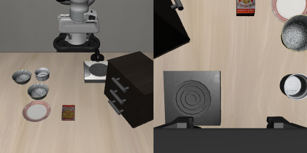

数据
原始 HDF5 → 时序对齐
obs[t] → action[t+1]
全 500 条计算归一化统计
OPENPI × LIBERO SPATIAL / 丁家豪
从 500 条示教出发，比较不同模块更新范围。用真实训练记录与相同初态下的机器人闭环行为，回答“哪些参数值得更新”。

476 / 500 · 方案 D
01 / EXPERIMENT
统一基础权重、训练样本与预算。模块范围和可训练参数精度存在联动，因此这里比较的是适配配方。
原始 HDF5 → 时序对齐
obs[t] → action[t+1]
全 500 条计算归一化统计
π0.5 base → A–D
Flow Matching · global batch 32
动作块长度 10
双相机 + 语言 → 动作块
预测 10 步 / 执行前 5 步
重观测后再次预测
官方 Spatial 10 × 50 初态
共享 manifest 与控制协议
保留视频、动作和状态轨迹
| 方案 | 更新范围 | 可训练参数 | 最终成功率 |
|---|
本轮使用全部 500 条示教，无留出离线验证。E 全模型微调在本轮暂缓；旧 450 条训练结果单独保留。C 不是整模型全量微调。
ADAPTATION ARCHITECTURES
沿着视觉、语言与动作路径，查看哪些权重冻结、哪些使用 LoRA、哪些直接更新。
语言与动作主干训练低秩支路，同时更新视觉编码、视觉投影，以及动作输入 / 输出投影和时间 MLP。
LoRA 同时覆盖 Attention 与 FFN：语言侧 rank 16，动作侧 rank 32。各方案独立从 π0.5 base 初始化；图中差异不是接续训练顺序。E 仅展示更新范围，无本轮成绩。了解项目方法 ↗
02 / TRAINING EVIDENCE
从每一步训练日志导出。点击切换方案、原始曲线或平滑趋势，移动光标查看真实记录。
B 与 C 的最终批次 loss 接近，但闭环成功率为 28.4% 与 94.8%。逐步监督误差无法单独描述滚动执行后的状态分布和任务结果。
四组各 3,000 步，已核对样本索引逐步一致。先训练 2 步、保存并恢复后追加 2,998 步，前两步计入总预算。
| 方案 | Step 3000 批次 loss | 最后 100 步平均 | 最后 300 步平均 |
|---|
最后 N 步均值是这些更新批次的平均，不是全训练集损失，也不是验证损失。没有补造验证曲线或新跑实验。
03 / CLOSED-LOOP RESULTS
官方初态上的同任务闭环评测。每种模型自行执行动作，最终成功由环境任务条件判定。
共同成功 139 回合，C 独有成功 335，B 独有成功 3。扩大更新范围的收益在本协议下明显。
C 独有成功 14 回合，D 独有成功 16。整体仅差 2 回合，不能据此宣称 D 普遍优于 C。
C 为 36/50，D 为 43/50；这个任务上的差异大于整体均值。可在下方查看配对实例。
使用固定版本 LIBERO 官方 .pruned_init，10 个任务各 50 条。256 渲染 → 180° 旋转 → PIL 双线性 224；稳定 10 步，最多 220 个控制步，预测 10 / 执行 5 / 去噪 10。五组评估共享 manifest 和按回合配对的动作噪声。
这是相同任务集合上的评估，不代表未见任务泛化或真机表现。固定项目仿真环境，不宣称逐位复现官方发布榜单。450→500 两轮的训练数据和归一化均发生变化；旧 E 的 91.4% 不属于本轮。
04 / SIMULATION REPLAY
精选真实闭环录像。片段用于解释行为，完整成绩来自全部评估回合。这里播放记录，不在线运行模型。
由已有结果图与四组配对录像剪辑而成，未运行模型；片段结束后保持终帧。下载 MP4 ↗
分别选择 B 失败而 C/D 成功、C 成功而 D 失败、任务 5 中 D 成功而 C 失败、C/D 均失败四类；每类按任务号与初态号排序取第一个匹配回合。可切换模型；同一案例初态哈希已核对一致。来源路径和视频哈希见 媒体清单。每段视频左侧为外部相机，右侧为腕部相机。
05 / METHOD & CONTRIBUTION
查看数据协议、模块更新范围、实验结论及本项目工作范围。